Peanut Butter and Oat Granola Bars
In this recipe, we will be exploring just how versatile raw granola batters can be. We will be making bars, sticks, and even cereal (should you choose to be adventurous)! These bars are raw, vegan, oil-free, and totally FREE from gluten, dairy, refined sugar, soy, artificial flavors, and BHT (preservative). My goal was to create a granola that wasn’t too sweet, slightly chewy, yet holds its shape without the need for Spanx. (What’s with my crazy sense of humor?!)
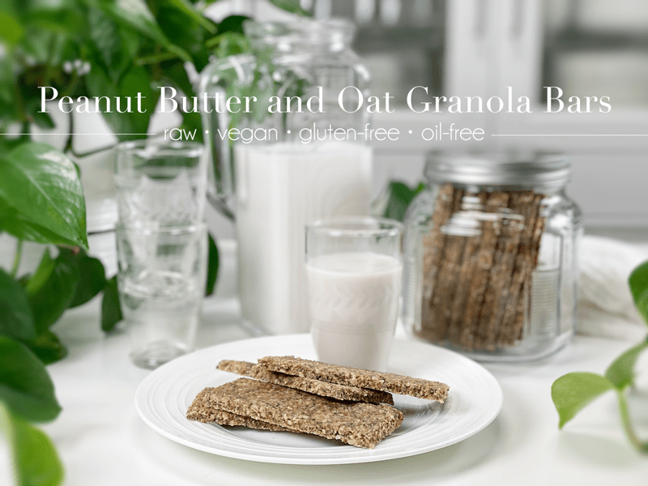
Bar Shapes
Granola bars don’t have to be locked into their typical bar shapes. Growing up we all heard “Stop playing with your food!” Well, today, I am giving you permission to START playing with your food!
Bar Shapes
- Nothing fancy or complicated about them… just what you might expect in a granola bar.
- You can make them long and skinny or short and chubby.
- Regardless of their shape, be sure to create portion-controlled sizes.
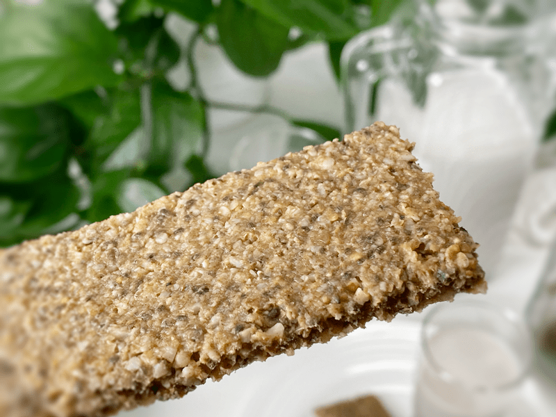
Granola Sticks
- I thought this shape would also be perfect for young ones. No sharp edges for their delicate mouths, and the ideal shape to grasp with their little paws.
- You will need a piping bag and a 1/2″ piping tip for this task.
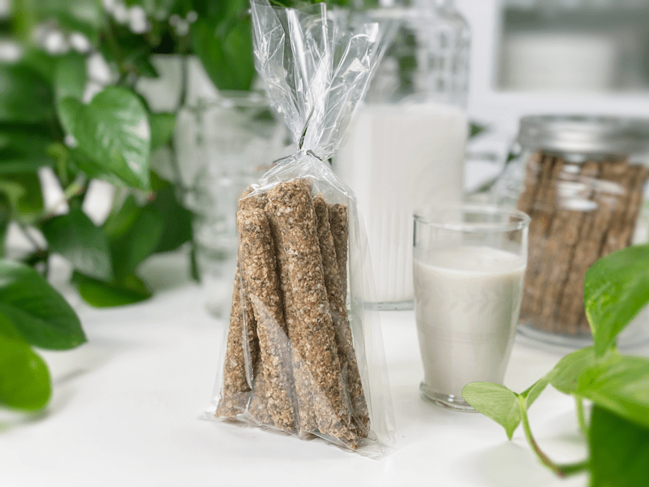
Create a Cereal
- You can easily turn this recipe or part of it into cereal.
- I failed to snap some photos of me scoring it into small bite-sized pieces, but you can use the same technique as making the bars. Instead of scoring them into bar shapes, you will create little cubes.
- Add some plant-based milk, perhaps some fresh berries (wish I had some for the photoshoot), and enjoy.
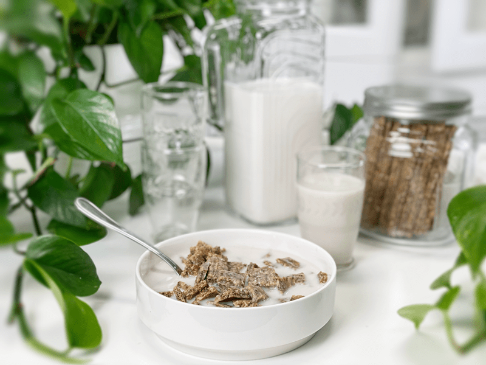
Ingredients and Techniques
Raw Almonds and Oats
- The ingredient list specifies soaked almonds and oats. When it comes to creating recipes, my first and foremost goal to make the recipe nutrient-dense and easy to digest (hence the soaking process).
- If you are new to this technique, click (here- for oats) and (here – for almonds) to learn how and why.
Prunes
- When most people think of prunes, they think of elimination issues. The reason for this has to due to their fiber content. I LOVE prunes and prune juice. In fact, I used to buy bottles of prune juice just for enjoyment. One day, while checking out at the grocery store the checker scanned the bottle. As she lowered it into the bag she looked at me and said, “Oh, I am sorry that you don’t feel good.” When I told her that I felt fine and that I just enjoyed the taste, she blinked hard a few times.
- The prunes act as a binder and whole-food sweetener in this recipe.
- Substitution: pitted Medjool dates or dried figs. Another option–if you have date paste on hand, you can use 1/2 cup.
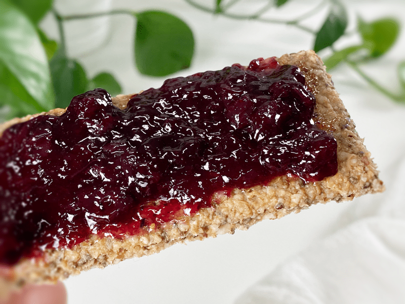
Bob loves to top the granola bars with jam.
Chia and Flax Seeds
- Both of these seeds are loaded with nutrients and by using both, you are increasing the variety of nutrients that your body is getting.
- The flax seeds require either soaking or grinding to a powder in order for your body to absorb the nutrients they have to offer. For this recipe, you will be grinding them.
- Chia seeds, however, don’t require being ground to a powder in order for the body to absorb them, so you will be using them whole.
Almond or Peanut Butter
- I have used both almond and peanut butter in the past. Both taste amazing.
- You can use any nut or seed butter; just keep in mind that each variety changes the flavor of the granola bar.
- The nut butter also works as a binder in this recipe, helping everything stick together.
Remember, your intuition, creativity, and joy are the best assets to bring to the kitchen. Feel free to sub in/out any ingredients to fit your dietary needs. This recipe is quite forgiving and can handle anything you throw at it… except broccoli. That would just be wrong (just checking to see if you are paying attention). Enjoy and have a blessed day, amie sue
 Ingredients:
Ingredients:
- 1 cup raw almonds, soaked
- 3 cups gluten-free rolled oats, soaked & rinsed
- 2/3 cup prunes, rehydrated in 2/3 cup hot water
- 3/4 cups natural almond or peanut butter
- 1/4 cup maple syrup
- 1/4 cup applesauce
- 1 tsp vanilla extract
- 1 tsp ground Ceylon cinnamon
- 1/4 tsp Himalayan pink salt
- 1/2 cup hemp hearts
- 1/2 cup chia seeds
- 1/4 cup golden flaxseeds, ground
Preparation:
Dough Preparation
- After the almonds have soaked, drain and rinse them. Place the almonds in the food processor bowl, fitted with the “S” blade. Process until they resemble a small crumble. Pour into a small bowl and set aside.
- After the oats are done soaking, rinse the living daylights out of them.
- Pour into a large stainless steel, mesh strainer, putting it under the faucet. As the water is running through the oats, agitate them with your hand. This will speed up the rinsing process. I enjoy this process; the smell of oats is so yummy to me.
- Hand squeeze the excess water from the oats and set aside.
- Place the prunes in 2/3 cup of hot water and soak till soft; pour the prunes and water in the food processor bowl along with the nut butter, maple syrup, applesauce, vanilla, salt, and cinnamon. Process until creamy smooth.
- Add the soaked and drained oats, ground almonds, hemp, chia, and flax seeds. Pulse until everything is well mixed. Stop and scrape the sides down as needed.
- Let the mixture sit for 15 minutes.
- This gives the flax and chia seeds time to activate and thicken the mixture.
Granola Sticks
- To create granola sticks, you will need a pastry bag and a 1/2″ circular piping tip.
- Place the tip snugly into the bag.
- Slide the bag, tip first, into a quart-sized mason jar, and fold the edges of the bag over the mouth of the jar, creating a collar.
- With your free hand, using a spoon or long spatula, fill the bag.
- Don’t overfill the bag. If you do, the batter might ooze out the other end, or it might be too much to handle.
- Before twisting the bag shut, work out any air bubbles. Twist the bag tight.
- Any air encountered during piping will result in a little explosion of filling and disrupt your long stick.
- It is good to do this step every time you fill the bag and/or when you have problems piping.
- Hold the tip of the bag at a 45-degree angle and with firm but gentle pressure, squeeze the batter out onto a non-stick sheet that works with the dehydrator.
- As the batter comes out, slowly move your hand down the length of the tray, making long sticks. Repeat till the batter is used up.
- Dehydrate at 145 degrees (F) for 1 hour, then reduce to 115 degrees and continue to dry for about 18+ hours.
- Partway through the drying process, remove them from the non-stick sheet and place them directly on the mesh sheet so they can dry quicker.
- You can pull them out at any stage of dryness that you desire.
- Are you concerned about the 145 temp? Read why I do this (here).
- Store in an airtight container or wrap individually.
Granola Bars and/or Cereal Squares
- Place a non-stick dehydrator sheet on top of the counter.
- Place the batter in the center and cover it with plastic wrap.
- Roll the batter out to about 1/4″ or thicker.
- The thicker the batter, the longer it will take to dry.
- Remove the plastic wrap and with a butter knife or long metal ruler, score the batter into the shapes that you want.
- Place the bars on the dehydrator tray that comes with the dehydrator and dry at 145 degrees (F) for 1 hour, then reduce to 115 degrees and continue to dry for about 18+ hours.
- Partway through the drying process, remove them from the non-stick sheet and place them directly on the mesh sheet so they can dry quicker.
- You can pull them out at any stage of dryness that you desire.
- Store in an airtight container or wrap individually.
-
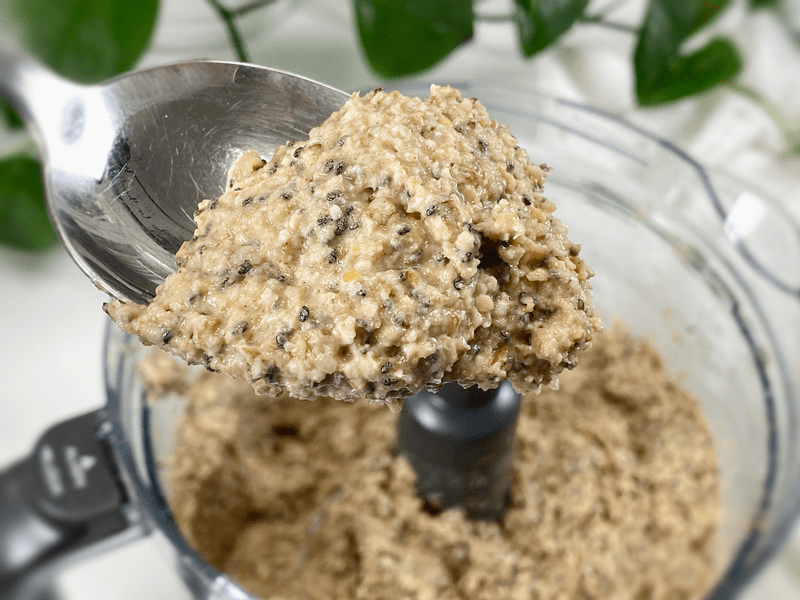
-
Here is a close-up of what my batter looked like.
-
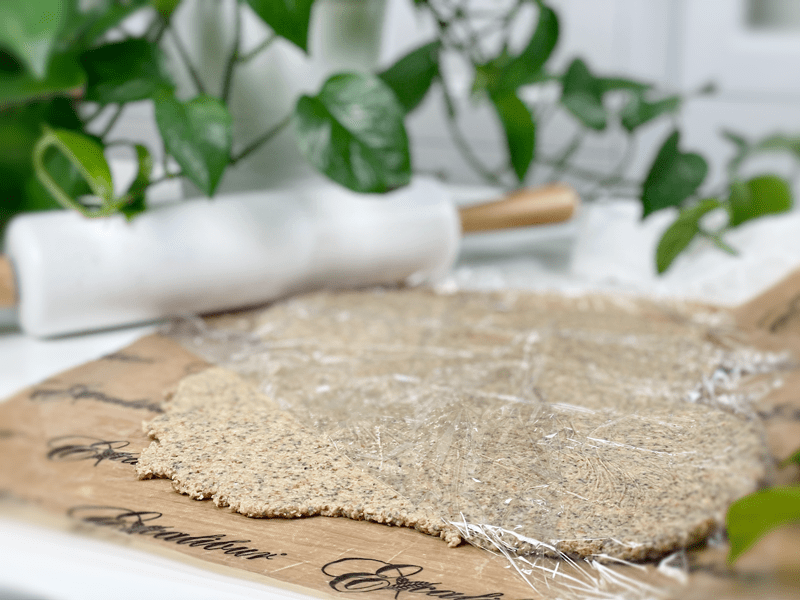
-
Roll the batter out in between two non-stick sheets to 1/4-1/2″ thick.
-
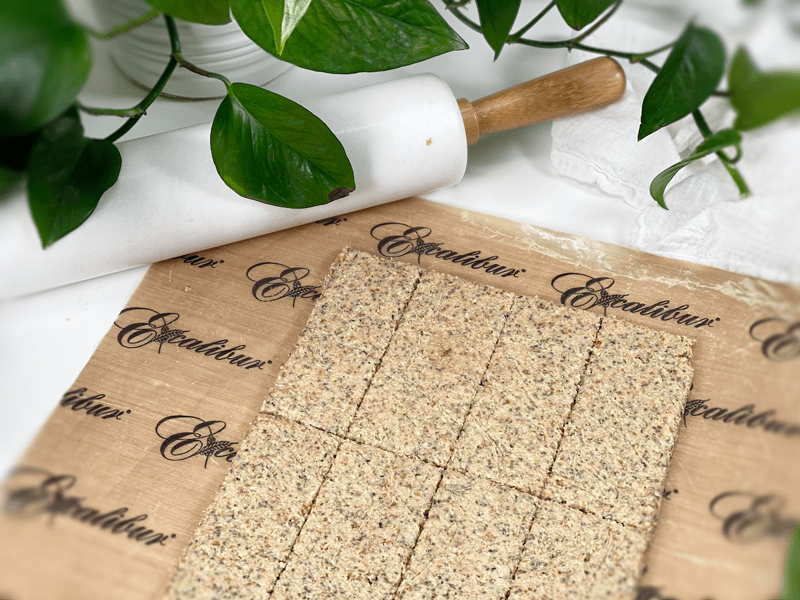
-
Clean up the edges and score into bar shapes or cereal squares.
-
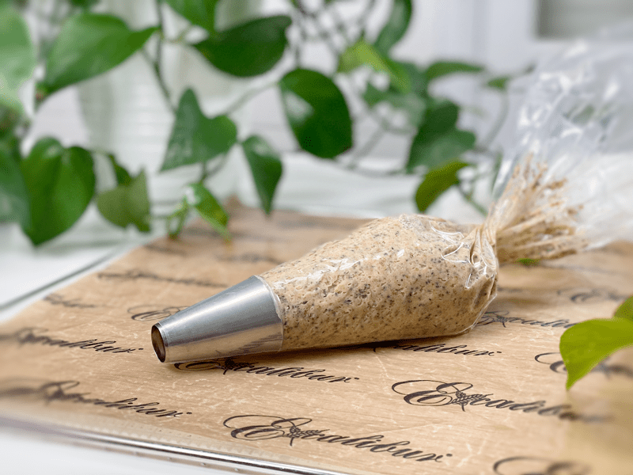
-
To make the granola sticks, load a piping bag that is fitted with a 1/2″ piping tip.
-
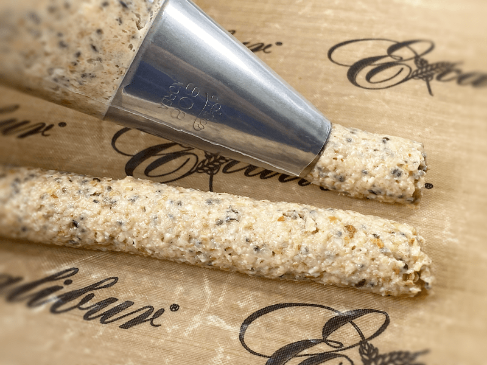
-
Holding the bag at a 45 degree angle, pipe the batter out onto the non-stick dehydrator sheet with a slow, steady, and even pressure.
-
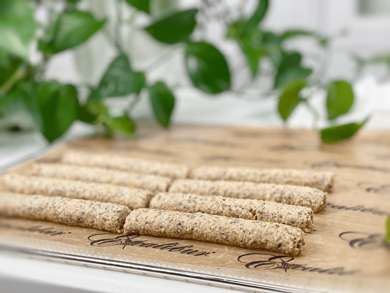
-
Score into any length you want and dehydrate.
© AmieSue.com